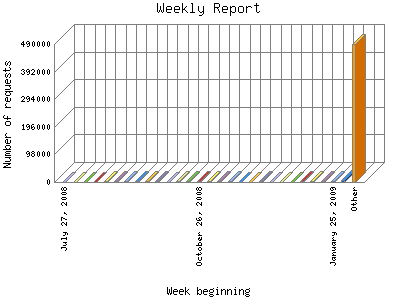

Analog 5.24
Analog 5.24 Report Magic for Analog 2.13
Report Magic for Analog 2.13The Weekly Report identifies the activity for each week within the report
time frame. Remember that one page hit can result in several server requests
as the images for each page are loaded.
Note: Depending on the
report time frame for this report the first and last week may not represent
a full seven day week, resulting in lower hits.

| Week beginning | Number of requests | Percentage of the requests | |
|---|---|---|---|
| 1. | August 28, 2011 | 16 | 0% |
| 2. | August 21, 2011 | 3,914 | 0.70% |
| 3. | August 14, 2011 | 6,460 | 1.16% |
| 4. | August 7, 2011 | 4,526 | 0.81% |
| 5. | July 31, 2011 | 5,603 | 1% |
| 6. | July 24, 2011 | 6,481 | 1.17% |
| 7. | July 17, 2011 | 4,789 | 0.86% |
| 8. | July 10, 2011 | 5,673 | 1.1% |
| 9. | July 3, 2011 | 2,751 | 0.50% |
| 10. | June 26, 2011 | 2,965 | 0.53% |
| 11. | June 19, 2011 | 5,524 | 0.99% |
| 12. | June 12, 2011 | 6,006 | 1.8% |
| 13. | June 5, 2011 | 5,039 | 0.90% |
| 14. | May 29, 2011 | 3,506 | 0.62% |
| 15. | May 22, 2011 | 3,645 | 0.66% |
| 16. | May 15, 2011 | 4,395 | 0.79% |
| 17. | May 8, 2011 | 6,688 | 1.20% |
| 18. | May 1, 2011 | 0 | 0% |
| 19. | April 24, 2011 | 0 | 0% |
| 20. | April 17, 2011 | 0 | 0% |
| 21. | April 10, 2011 | 0 | 0% |
| 22. | April 3, 2011 | 0 | 0% |
| 23. | March 27, 2011 | 0 | 0% |
| 24. | March 20, 2011 | 489 | 0.9% |
| 25. | March 13, 2011 | 8,352 | 1.50% |
| 26. | March 6, 2011 | 3,466 | 0.62% |
| 27. | February 27, 2011 | 3,245 | 0.59% |
| 28. | February 20, 2011 | 2,614 | 0.47% |
| 29. | February 13, 2011 | 1,890 | 0.33% |
| 30. | February 6, 2011 | 2,509 | 0.44% |
| 31. | January 30, 2011 | 2,298 | 0.41% |
| 32. | January 23, 2011 | 2,508 | 0.44% |
| 33. | January 16, 2011 | 3,896 | 0.70% |
| 34. | January 9, 2011 | 4,341 | 0.78% |
| 35. | January 2, 2011 | 3,916 | 0.70% |
| 36. | December 26, 2010 | 2,643 | 0.48% |
| 37. | December 19, 2010 | 1,826 | 0.32% |
| 38. | December 12, 2010 | 0 | 0% |
| 39. | December 5, 2010 | 0 | 0% |
| 40. | November 28, 2010 | 0 | 0% |
| 41. | November 21, 2010 | 0 | 0% |
| 42. | November 14, 2010 | 0 | 0% |
| 43. | November 7, 2010 | 0 | 0% |
| 44. | October 31, 2010 | 0 | 0% |
| 45. | October 24, 2010 | 0 | 0% |
| 46. | October 17, 2010 | 0 | 0% |
| 47. | October 10, 2010 | 0 | 0% |
| 48. | October 3, 2010 | 0 | 0% |
| 49. | September 26, 2010 | 0 | 0% |
| 50. | September 19, 2010 | 0 | 0% |
| 51. | September 12, 2010 | 0 | 0% |
| 52. | September 5, 2010 | 0 | 0% |
| 53. | August 29, 2010 | 0 | 0% |
| 54. | August 22, 2010 | 0 | 0% |
| 55. | August 15, 2010 | 0 | 0% |
| 56. | August 8, 2010 | 0 | 0% |
| 57. | August 1, 2010 | 0 | 0% |
| 58. | July 25, 2010 | 0 | 0% |
| 59. | July 18, 2010 | 0 | 0% |
| 60. | July 11, 2010 | 0 | 0% |
| 61. | July 4, 2010 | 263 | 0.4% |
| 62. | June 27, 2010 | 6,678 | 1.20% |
| 63. | June 20, 2010 | 5,425 | 0.98% |
| 64. | June 13, 2010 | 5,852 | 1.4% |
| 65. | June 6, 2010 | 6,542 | 1.18% |
| 66. | May 30, 2010 | 5,234 | 0.93% |
| 67. | May 23, 2010 | 7,041 | 1.27% |
| 68. | May 16, 2010 | 10,449 | 1.88% |
| 69. | May 9, 2010 | 6,405 | 1.14% |
| 70. | May 2, 2010 | 5,232 | 0.93% |
| 71. | April 25, 2010 | 5,915 | 1.6% |
| 72. | April 18, 2010 | 8,278 | 1.49% |
| 73. | April 11, 2010 | 4,750 | 0.86% |
| 74. | April 4, 2010 | 1,995 | 0.36% |
| 75. | March 28, 2010 | 1,807 | 0.32% |
| 76. | March 21, 2010 | 4,205 | 0.76% |
| 77. | March 14, 2010 | 4,809 | 0.87% |
| 78. | March 7, 2010 | 2,917 | 0.52% |
| 79. | February 28, 2010 | 3,769 | 0.68% |
| 80. | February 21, 2010 | 3,159 | 0.57% |
| 81. | February 14, 2010 | 0 | 0% |
| 82. | February 7, 2010 | 0 | 0% |
| 83. | January 31, 2010 | 0 | 0% |
| 84. | January 24, 2010 | 0 | 0% |
| 85. | January 17, 2010 | 0 | 0% |
| 86. | January 10, 2010 | 0 | 0% |
| 87. | January 3, 2010 | 0 | 0% |
| 88. | December 27, 2009 | 901 | 0.17% |
| 89. | December 20, 2009 | 22,177 | 3.98% |
| 90. | December 13, 2009 | 15,541 | 2.79% |
| 91. | December 6, 2009 | 3,287 | 0.59% |
| 92. | November 29, 2009 | 2,458 | 0.44% |
| 93. | November 22, 2009 | 3,306 | 0.60% |
| 94. | November 15, 2009 | 6,123 | 1.10% |
| 95. | November 8, 2009 | 2,845 | 0.51% |
| 96. | November 1, 2009 | 2,952 | 0.52% |
| 97. | October 25, 2009 | 2,996 | 0.53% |
| 98. | October 18, 2009 | 3,139 | 0.57% |
| 99. | October 11, 2009 | 3,556 | 0.63% |
| 100. | October 4, 2009 | 3,902 | 0.70% |
| 101. | September 27, 2009 | 3,876 | 0.70% |
| 102. | September 20, 2009 | 3,811 | 0.69% |
| 103. | September 13, 2009 | 3,056 | 0.54% |
| 104. | September 6, 2009 | 2,305 | 0.41% |
| 105. | August 30, 2009 | 2,662 | 0.48% |
| 106. | August 23, 2009 | 7,768 | 1.40% |
| 107. | August 16, 2009 | 4,364 | 0.79% |
| 108. | August 9, 2009 | 3,721 | 0.67% |
| 109. | August 2, 2009 | 3,402 | 0.60% |
| 110. | July 26, 2009 | 2,226 | 0.40% |
| 111. | July 19, 2009 | 4,346 | 0.78% |
| 112. | July 12, 2009 | 4,017 | 0.72% |
| 113. | July 5, 2009 | 1,342 | 0.24% |
| 114. | June 28, 2009 | 815 | 0.14% |
| 115. | June 21, 2009 | 1,531 | 0.28% |
| 116. | June 14, 2009 | 984 | 0.18% |
| 117. | June 7, 2009 | 1,083 | 0.20% |
| 118. | May 31, 2009 | 1,547 | 0.28% |
| 119. | May 24, 2009 | 4 | 0% |
| 120. | May 17, 2009 | 2,040 | 0.37% |
| 121. | May 10, 2009 | 3,291 | 0.59% |
| 122. | May 3, 2009 | 2,839 | 0.50% |
| 123. | April 26, 2009 | 2,635 | 0.48% |
| 124. | April 19, 2009 | 2,002 | 0.36% |
| 125. | April 12, 2009 | 1,601 | 0.29% |
| 126. | April 5, 2009 | 1,488 | 0.27% |
| 127. | March 29, 2009 | 2,536 | 0.46% |
| 128. | March 22, 2009 | 2,290 | 0.41% |
| 129. | March 15, 2009 | 1,271 | 0.22% |
| 130. | March 8, 2009 | 4,106 | 0.73% |
| 131. | March 1, 2009 | 19,299 | 3.46% |
| 132. | February 22, 2009 | 24,200 | 4.33% |
| 133. | February 15, 2009 | 32,440 | 5.81% |
| 134. | February 8, 2009 | 37,909 | 6.80% |
| 135. | February 1, 2009 | 6,352 | 1.13% |
| 136. | January 25, 2009 | 4,668 | 0.83% |
| 137. | January 18, 2009 | 3,846 | 0.69% |
| 138. | January 11, 2009 | 3,003 | 0.53% |
| 139. | January 4, 2009 | 2,970 | 0.53% |
| 140. | December 28, 2008 | 628 | 0.11% |
| 141. | December 21, 2008 | 817 | 0.14% |
| 142. | December 14, 2008 | 1,091 | 0.20% |
| 143. | December 7, 2008 | 1,950 | 0.34% |
| 144. | November 30, 2008 | 768 | 0.13% |
| 145. | November 23, 2008 | 937 | 0.17% |
| 146. | November 16, 2008 | 2,553 | 0.46% |
| 147. | November 9, 2008 | 3,044 | 0.54% |
| 148. | November 2, 2008 | 4,474 | 0.80% |
| 149. | October 26, 2008 | 2,738 | 0.50% |
| 150. | October 19, 2008 | 3,665 | 0.66% |
| 151. | October 12, 2008 | 1,824 | 0.32% |
| 152. | October 5, 2008 | 569 | 0.10% |
| 153. | September 28, 2008 | 3,687 | 0.67% |
| 154. | September 21, 2008 | 4,309 | 0.78% |
| 155. | September 14, 2008 | 2,698 | 0.49% |
| 156. | September 7, 2008 | 3,859 | 0.70% |
| 157. | August 31, 2008 | 2,899 | 0.51% |
| 158. | August 24, 2008 | 1,864 | 0.33% |
| 159. | August 17, 2008 | 1,257 | 0.22% |
| 160. | August 10, 2008 | 1,264 | 0.22% |
| 161. | August 3, 2008 | 1,486 | 0.27% |
| 162. | July 27, 2008 | 378 | 0.7% |
Most active week beginning February 8, 2009 : 37,909 requests handled.
Weekly average: 4430 requests handled.
This report was generated on August 28, 2011 02:33.
Report time frame August 1, 2008 06:00 to August 28, 2011 04:03.
| Web statistics report produced by: | |
| Analog 5.24 | Report Magic for Analog 2.13 |